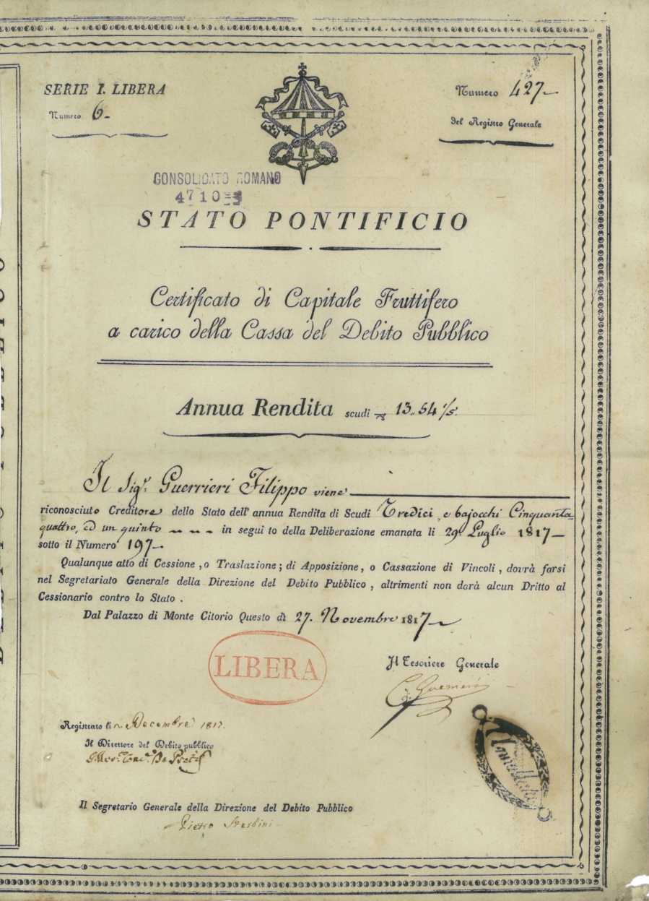

How bonds work: face value, coupon, yield and risks
A bond is a security through which a government or company borrows money and repays it with interest. This reference explains the key terms of a bond, the inverse relationship between price and yield, the types of bonds, the risks, and Uzbekistan's steps into the international bond market, on the basis of sources.

A bond is a debt security. The investor who buys it is, in effect, lending money to the issuer — the government, city or company that issued the bond. In return the issuer pays interest for a set period and repays the principal when the bond matures. The difference from a share is this: a shareholder owns a stake in the company, whereas a bondholder is only a creditor — the loan and interest are repaid, but there is no share of the business's profit. (Source: U.S. Securities and Exchange Commission, SEC — Investor.gov.)
Key terms
Face (par) value is the principal repaid at maturity. The coupon is the interest rate the issuer pays (usually once or twice a year). Maturity is the date the bond is fully repaid. Yield is the actual return relative to the bond's current price. An investor may buy a bond below or above its face value, so the yield often differs from the coupon rate. (Source: SEC — Investor.gov.)
The inverse relationship between price and yield
Bond prices and market interest rates move in opposite directions. When new bonds begin to be issued at higher rates, the price of an existing (lower-coupon) bond falls, because it is now less attractive; conversely, when rates fall, the price of an existing (higher-coupon) bond rises. This inverse relationship is one of the basic rules of the bond market. (Source: SEC — Investor.gov.)

Types of bonds
Government bonds are the most common type. In the United States, for example, Treasury securities fall into three categories: Treasury bills (short-term, up to one year), Treasury notes (medium-term, 2–10 years) and Treasury bonds (long-term, 20–30 years). There are also corporate bonds (issued by companies) and municipal bonds (issued by local authorities). (Source: U.S. Department of the Treasury, TreasuryDirect; SEC.)
The risks of a bond
A bond is not necessarily "safe." The main risks are: credit (default) risk — the issuer failing to pay; interest-rate risk — the bond's price falling if rates rise; inflation risk — the erosion of the real return; and currency risk, on bonds in a foreign currency. To gauge the likelihood of default, rating agencies — Moody's, S&P Global and Fitch — assign ratings to bonds, from high "investment" grade down to high-yield but riskier ("junk," i.e. speculative) grade. (Source: SEC — Investor.gov.)
Uzbekistan in the international bond market
After many years of isolation, Uzbekistan entered the international debt market. In December 2018 the country received its first sovereign credit ratings: Fitch and S&P Global assigned "BB−"; in February 2019 Moody's set a "B1" rating. On that basis, in February 2019 Uzbekistan issued its debut eurobonds in London — US$1 billion in total, in two tranches: US$500 million at 4.75% maturing in 2024 and US$500 million at 5.375% maturing in 2029. Demand exceeded supply 8.5-fold; the placement was arranged by JP Morgan, Citi and Gazprombank. (Source: Bloomberg; bne IntelliNews; Kun.uz.)
Uzbekistan later also issued international bonds in its national currency. In November 2020 the country placed, for the first time, an international bond denominated in soum (alongside a dollar tranche, about US$750 million in total) — a step seen as reducing currency risk and attracting international investors to the domestic financial market. In 2021 Uzbekistan issued its first "green" eurobonds and a 3-year soum bond of about 2.5 trillion soum (roughly US$235 million) at 14%. (Source: Kun.uz; bne IntelliNews.)
Sukuk — the alternative in Islamic finance
A conventional bond pays fixed interest (riba), which is forbidden in Islamic finance. For this reason sukuk is used in Islamic finance as the alternative to a bond: it is based not on interest but on a share in a specific asset and the real income derived from it. This difference is explained in detail in the references [[islom-moliyasi-asoslari]] and [[takaful-islom-sugurtasi]]. (Source: IMF; AAOIFI general principles.)
Conclusion
A bond is the main instrument through which governments and companies borrow, and for an investor it is usually a steadier but lower-return instrument than a share. To understand it correctly you need to tell face value, coupon, maturity and yield apart, pay attention to the rating (default risk), and remember the inverse relationship between rates and price.

Sources
- U.S. Securities and Exchange Commission (Investor.gov) — Bonds
- U.S. Department of the Treasury — TreasuryDirect: Treasury marketable securities
- Bloomberg — Uzbekistan Emerges From Isolation with $1 Billion Eurobond Sale (13 Feb 2019)
- Kun.uz — Uzbekistan issues Eurobonds in the national currency for the first time (20 Nov 2020)
- Kun.uz — Fitch Ratings places Uzbekistan in sovereign credit rating (21 Dec 2018)